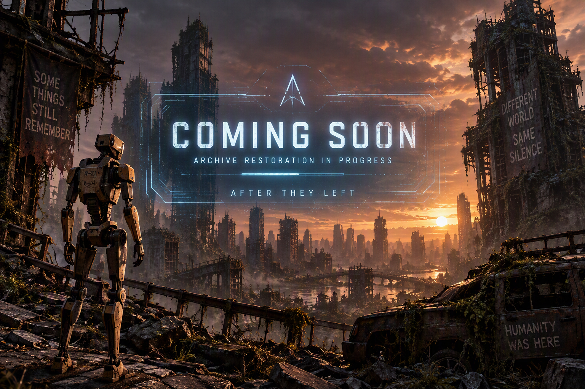

Elias Ward
Perimeter Engineer · Age 34
Served under the Northern Grid Authority, responsible for maintaining structural stability across the outer districts.
Swipe or drag through the cast. Open a survivor’s file for the full record.
Served under the Northern Grid Authority, responsible for maintaining structural stability across the outer districts.

Senior analyst within the Northern Evacuation Network, interpreting relay data and tracking structural telemetry.

Amelia runs the contract boards in Redwick. She’s the one who keeps track of every missing item, every request, every lead, and every traveller who heads out into the wilds. She’s sharp, organised, and carries the weight of knowing exactly how many people never came back. She grew up in Redwick before the fall and remembers the Continental Union at its peak. She’s calm, steady, and the closest thing the city has to a leader — even if she never asked for the role.

Hale is Redwick’s archivist. He preserves old Union records, maps, photos, and personal stories. He believes the past matters — not because it’s gone, but because it explains what’s coming. He’s the one who tells you what Marrow Bay used to be, who lived there, and why the dome was built. He’s calm, thoughtful, and carries a quiet fear that history is repeating itself.
Elias Ward served as a perimeter engineer under the Northern Grid Authority, responsible for maintaining structural stability across the outer districts. His work included reinforcement of perimeter walls, calibration of long‑range relay towers, and emergency evacuation support during the final week before the Departure.
Raised in Marrow Bay, Elias developed early proficiency with failing infrastructure and improvised repair methods. His parents maintained salvage routes and emergency broadcast equipment, exposing him to unstable systems from childhood.
He is considered one of the last individuals with functional knowledge of pre‑Departure infrastructure.
Psychological Notes
Despite these markers, subject remains highly functional and mission‑capable.
Marla Vexley served as a senior analyst within the Northern Evacuation Network, responsible for interpreting relay data, tracking structural telemetry, and identifying early‑stage collapse indicators across the grid. Her work became critical during the final week before the Departure, when automated systems began failing without explanation.
Raised in Redwick Central, Marla excelled academically and entered the Grid Authority at age 23. She quickly gained a reputation for her ability to reconstruct corrupted data streams and detect patterns buried beneath system noise. Her warnings were often dismissed as “over‑interpretation” until the final 72 hours, when her predictions aligned with the first confirmed grid failures.
She is believed to possess knowledge regarding the initial Collapse‑Sequence anomalies.
Psychological Notes
Despite these markers, subject remains cognitively sharp and mission‑capable.